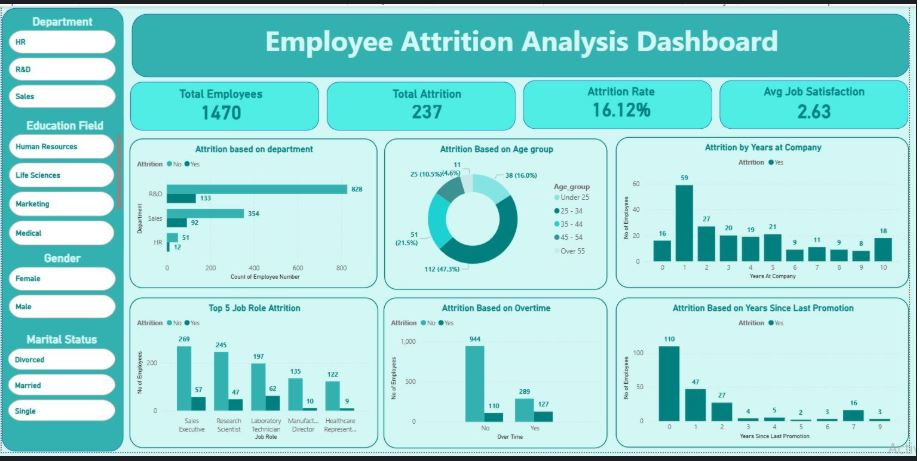
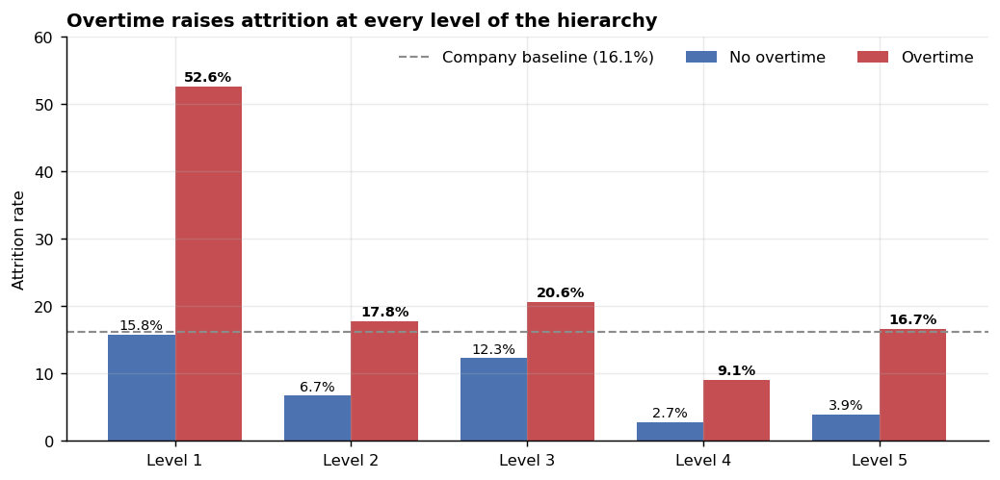
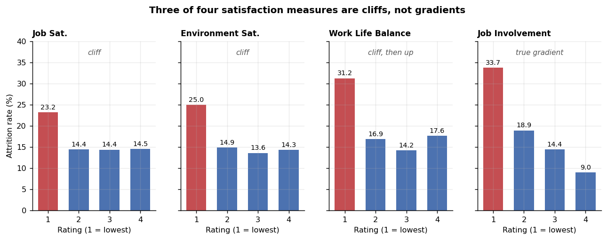
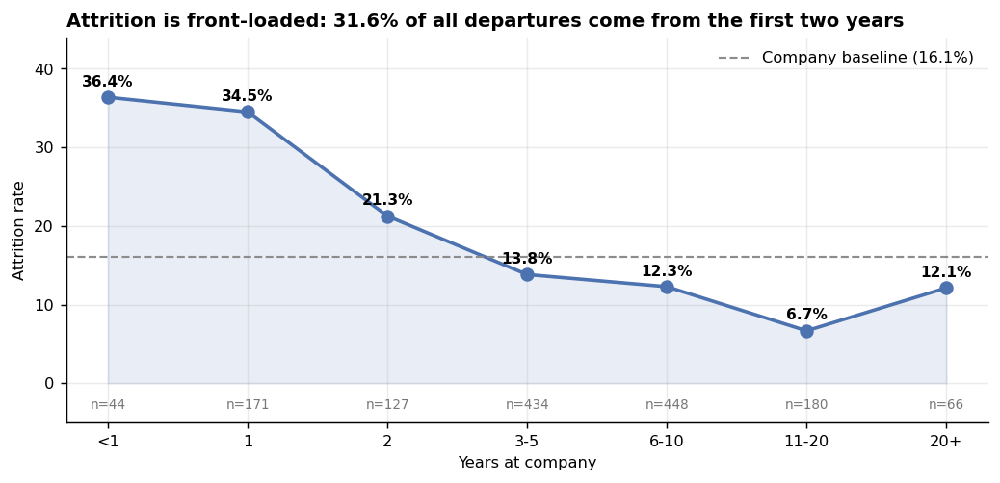
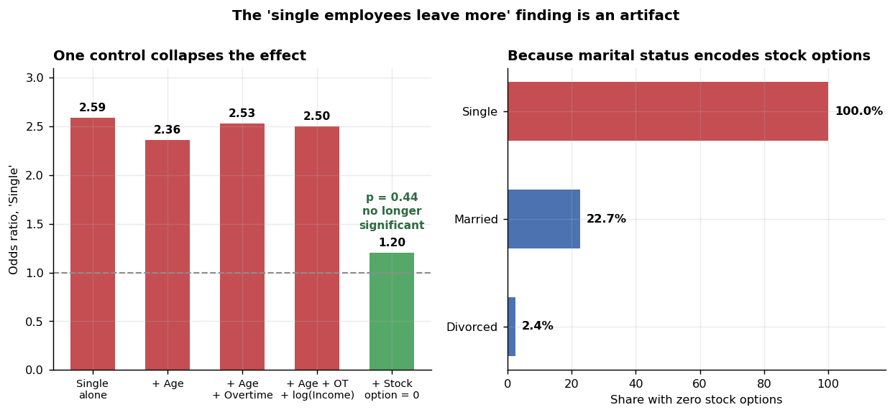

Employee Attrition Analysis Dashboard
A Power BI dashboard over 1,470 employee records, built to find out who leaves and why. Overtime turns out to be the dominant driver and it survives every control. Two of the other headline drivers do not — one is a cliff misread as a dial, and one is an artifact of how the file was built.
The brief
Who is leaving, and which levers actually move it
HR attrition dashboards usually stop at a set of single-variable bar charts: attrition by department, by age band, by satisfaction score. Each one looks like a driver. Most of them are the same driver seen from different angles, and at least one is not a driver at all.
So the analysis was built in two passes. First the descriptive cut that the dashboard reports, then a check on whether each apparent driver survives controlling for the others. The second pass is what separates a finding from a coincidence, and it changed three of the conclusions.
The data
1,470 employees, 44 fields, 237 recorded departures
| Check | Result |
|---|---|
| Employees | 1,470 |
| Attrition events | 237 (16.12%) |
| Duplicate employee numbers | 0 |
| Nulls in core fields | 0 |
| Zero-variance columns | 6 — dropped |
The class balance matters for how results are read: at 16.1% attrition, a model that predicts "nobody leaves" is 83.9% accurate. Accuracy is a useless metric here, so everything below is reported as rates within groups rather than model accuracy.
What was built

Power BI report
3 pages, 30 visuals — cards, clustered column and bar charts, donut and pie breakdowns, plus a detail table.
DAX measures
Total Employees, Total Attrition, Attrition Rate, Attrition %, Avg salary, average_jobSatisfaction.
Interactivity
7 slicers. Report fields include department, job role, age band, overtime, gender, education field, marital status and tenure.
Excel companion
PivotTable workbook with KPI, rating and gender sheets driving 7 charts and 3 slicers.
| Headline KPI | Value |
|---|---|
| Total employees | 1,470 |
| Attrition count | 237 |
| Active employees | 1,233 |
| Attrition rate | 16.12% |
| Average age | 36.92 |
| Average job satisfaction | 2.63 / 4 |
| Gender split | 882 male / 588 female |
Explore it yourself
The same data, live. Every figure below is recomputed in the browser from all 1,470 records as you change the filters — nothing is pre-baked. The dashed line marks the unfiltered company rate of 16.1%, so any bar reaching past it is a group leaving faster than the company as a whole.
Try this
Set Marital Status to Single and watch the rate jump to 25.5%. That is the number the dashboard was originally built to surface — and finding 5 below shows why acting on it would be a mistake. Then set Department to HR, Gender to Female and Marital Status to Divorced: four employees, three of whom left. A naive dashboard would report 75% attrition there. This one reports the group is too small to rate, which is the only defensible answer.
Findings
1 Overtime is the strongest driver, and it holds inside every job level
Employees working overtime leave at 30.5% against 10.4% for those who do not — a near-threefold gap, chi-square p < 10⁻²⁰.
A gap that large invites the obvious objection: maybe overtime is just a marker for junior, underpaid roles, and seniority is doing the work. It is not. The effect appears independently at every level of the hierarchy:

| Job level | No overtime | Overtime | Gap |
|---|---|---|---|
| 1 (most junior) | 15.8% | 52.6% | +36.8pp |
| 2 | 6.7% | 17.8% | +11.1pp |
| 3 | 12.3% | 20.6% | +8.3pp |
| 4 | 2.7% | 9.1% | +6.4pp |
| 5 (most senior) | 3.9% | 16.7% | +12.8pp |
Junior employees working overtime leave at 52.6% — more than half the group, against a 16.1% company baseline. That group is 156 people, 10.6% of headcount, but 34.6% of every departure in the file. It is the single most concentrated risk pool in the data and the one place where an intervention has the most to work with.
2 Satisfaction is a floor, not a dial
The dashboard-standard reading of a 1–4 satisfaction scale is that attrition falls steadily as satisfaction rises. For two of the four satisfaction measures, that is simply not what the data shows:

| Measure | Level 1 | Level 2 | Level 3 | Level 4 | Shape |
|---|---|---|---|---|---|
| Job Satisfaction | 23.2% | 14.4% | 14.4% | 14.5% | cliff |
| Environment Satisfaction | 25.0% | 14.9% | 13.6% | 14.3% | cliff |
| Work-Life Balance | 31.2% | 16.9% | 14.2% | 17.6% | cliff, then up |
| Job Involvement | 33.7% | 18.9% | 14.4% | 9.0% | true gradient |
Job Satisfaction levels 2, 3 and 4 sit at 14.4%, 14.4% and 14.5%. Those are not three points on a slope; they are the same number three times. The entire effect lives in the drop from level 1, and moving someone from "satisfied" to "very satisfied" is associated with no change whatsoever.
Job Involvement is the exception and behaves the way the scale is supposed to — a clean monotonic decline from 33.7% to 9.0% across all four levels. Work-Life Balance is stranger still: the best rating carries higher attrition (17.6%) than the middle one (14.2%), so the relationship is not even monotonic.
A gradient justifies broad engagement spend — lift everyone a notch, get a proportional return. A cliff does not. It says the budget belongs entirely to identifying and rescuing the bottom band: 280 employees on Job Satisfaction 1, 264 on Environment Satisfaction 1. Spending on the already-satisfied majority buys nothing the data can detect.
3 Attrition is front-loaded into the first two years

| Years at company | Employees | Leavers | Rate |
|---|---|---|---|
| Under 1 | 44 | 16 | 36.4% |
| 1 | 171 | 59 | 34.5% |
| 2 | 127 | 27 | 21.3% |
| 3 – 5 | 434 | 60 | 13.8% |
| 6 – 10 | 448 | 55 | 12.3% |
| 11 – 20 | 180 | 12 | 6.7% |
| Over 20 | 66 | 8 | 12.1% |
31.6% of every departure happens in the first two years, from a group that is only 14.6% of headcount. Attrition then falls steadily to a low of 6.7% at 11–20 years before ticking back up past 20 years, which is most plausibly retirement rather than resignation — the data does not distinguish the two.
4 Pay matters at the bottom and then stops mattering
Median monthly income is $3,202 for leavers against $5,204 for stayers (Mann-Whitney p < 10⁻¹³). But the relationship is another cliff, not a slope:
| Income quintile | Range | Attrition |
|---|---|---|
| 1 (lowest) | $1,009 – $2,696 | 31.3% |
| 2 | $2,696 – $4,229 | 17.0% |
| 3 | $4,229 – $5,743 | 10.5% |
| 4 | $5,743 – $9,860 | 12.6% |
| 5 (highest) | $9,860 – $19,999 | 9.2% |
The bottom quintile is the outlier. Quintiles 3, 4 and 5 sit between 9.2% and 12.6%, and quintile 4 is actually worse than quintile 3. Nearly the whole pay effect is the gap between the lowest-paid fifth and everyone else.
Sales Representatives are the sharpest expression of this: 39.8% attrition, the highest of any role, on a median income of $2,579 against $4,919 across all roles, with a median tenure of two years and a median age of 30. Junior, low-paid and new — the three risk factors stacked.
5 Commute distance behaves cleanly
| Distance from home | Employees | Attrition |
|---|---|---|
| Up to 2 miles | 419 | 12.9% |
| 2 – 5 | 213 | 15.5% |
| 5 – 10 | 394 | 14.5% |
| 10 – 20 | 240 | 20.0% |
| Over 20 | 204 | 22.1% |
Broadly monotonic, and it survives the multivariate model below. Employees living more than 20 miles out leave at 1.7× the rate of those within 2 miles.
The finding that isn't one
Why "single employees leave twice as often" should not go on a slide
Marital status produces one of the most quotable numbers in the whole dataset:
| Marital status | Employees | Attrition |
|---|---|---|
| Single | 470 | 25.5% |
| Married | 673 | 12.5% |
| Divorced | 327 | 10.1% |
The obvious explanation is age, so the first check was to add age to a logistic model. The effect barely moved. Adding overtime and income did not move it either. Then one column killed it outright:

| Model | Odds ratio, Single | p |
|---|---|---|
| Single alone | 2.59 | < 0.001 |
| + Age | 2.36 | < 0.001 |
| + Age + Overtime | 2.53 | < 0.001 |
| + Age + Overtime + log(Income) | 2.50 | < 0.001 |
| + Stock option level = 0 | 1.20 | 0.440 |
The reason is structural, and it is visible the moment the two columns are crossed:
| Marital status | Share with zero stock options |
|---|---|
| Single | 100.0% (470 of 470) |
| Married | 22.7% |
| Divorced | 2.4% |
Not most — all 470. Marital status is not an independent variable here, it is a perfect proxy for stock option level, which is itself a strong and plausible retention lever. Among employees who do have zero stock options, married staff leave at 20.3% and single staff at 25.5% — much closer, and no longer the story.
This is a property of how the dataset was assembled rather than a fact about human behaviour. Recommending relationship-based retention policy from it would be indefensible, and it would also be a policy no HR function should implement.
Stock options themselves are a real signal: employees with none leave at 24.4% against 9.4% at level 1 and 7.6% at level 2. That effect survives the full model at an odds ratio of 2.92 — it is the marital framing that has to go, not the underlying variable.
Multivariate check
Which drivers survive when they all compete
A logistic regression on 15 predictors, to see which effects are independent and which are echoes of each other. Odds ratios above 1 raise the probability of leaving.
| Predictor | Odds ratio | p | Verdict |
|---|---|---|---|
| Overtime | 5.30 | < 0.001 | survives — dominant |
| Job involvement = 1 | 3.58 | < 0.001 | survives |
| Work-life balance = 1 | 3.02 | < 0.001 | survives |
| No stock options | 2.92 | < 0.001 | survives |
| Environment satisfaction = 1 | 2.57 | < 0.001 | survives |
| Frequent business travel | 2.38 | < 0.001 | survives |
| Job satisfaction = 1 | 1.87 | 0.001 | survives |
| Number of prior employers | 1.19 | < 0.001 | survives |
| Distance from home | 1.04 | < 0.001 | survives (per mile) |
| log(Monthly income) | 0.29 | < 0.001 | survives — protective |
| Age | 0.97 | 0.017 | weak, protective |
| Marital status: single | 1.15 | 0.584 | drops out |
| Years at company | 1.01 | 0.585 | drops out |
Years at company drops out — but that does not contradict finding 3. Once age and total working years are in the model, "years at this company" adds nothing beyond them. Early tenure remains a perfectly good targeting rule; it is just not an independent cause.
Job level and monthly income correlate at r = 0.950. With both in the model, job level flips to an odds ratio above 1 (1.59, p = 0.033) even though senior employees plainly leave less in the raw data. That sign flip is multicollinearity, not a discovery — the two variables are fighting over the same variance. The raw job-level rates in finding 1 are the trustworthy version.
Recommendations
Where the effort should go
- Start with overtime among junior staff. 156 people, 10.6% of headcount, 52.6% attrition, and over a third of all departures. It is the largest, most concentrated and most directly actionable pool in the data — and overtime is a scheduling decision the company already controls.
- Target the bottom satisfaction band only. Because satisfaction behaves as a cliff, spend aimed at the 2-to-4 range has no measurable return. The 280 employees at Job Satisfaction 1 and 264 at Environment Satisfaction 1 are where the effect lives.
- Review the first-year experience. Nearly a third of departures come from employees with under two years' service. Onboarding and early-tenure management reach that group before the decision is made.
- Look at the lowest pay quintile as a band, not a curve. The step from quintile 1 to 2 is worth 14 percentage points of attrition; every step above that is worth almost nothing. Sales Representatives at $2,579 median are the concrete case.
- Replace the marital status slicer with a stock option one. Filtering the report by marital status surfaces the 25.5% against 12.5% gap, and every reading of it will be wrong — the field measures stock option level. Slicing on stock options instead shows the same signal, and points at a lever the company can actually pull.
Limitations
- Cross-sectional, not longitudinal. Every field is measured at one point in time, including satisfaction. A departing employee's low satisfaction score may have been recorded because they had already decided to leave. Direction of causation is not established anywhere in this analysis.
- No leaving reason and no voluntary/involuntary split. Resignations, redundancies and retirements are pooled into one flag, which is the most likely explanation for the uptick past 20 years' tenure.
- Some effects are structural rather than behavioural. The marital status / stock option nesting is a documented example. Others may exist in fields not stress-tested here.
- 237 events across 15 predictors. That is roughly 16 events per variable — adequate for the model reported, but thin for adding interaction terms, which is why none are included.
- Job level and income are near-collinear (r = 0.950), so their individual coefficients should not be read separately. Their combined contribution is sound.